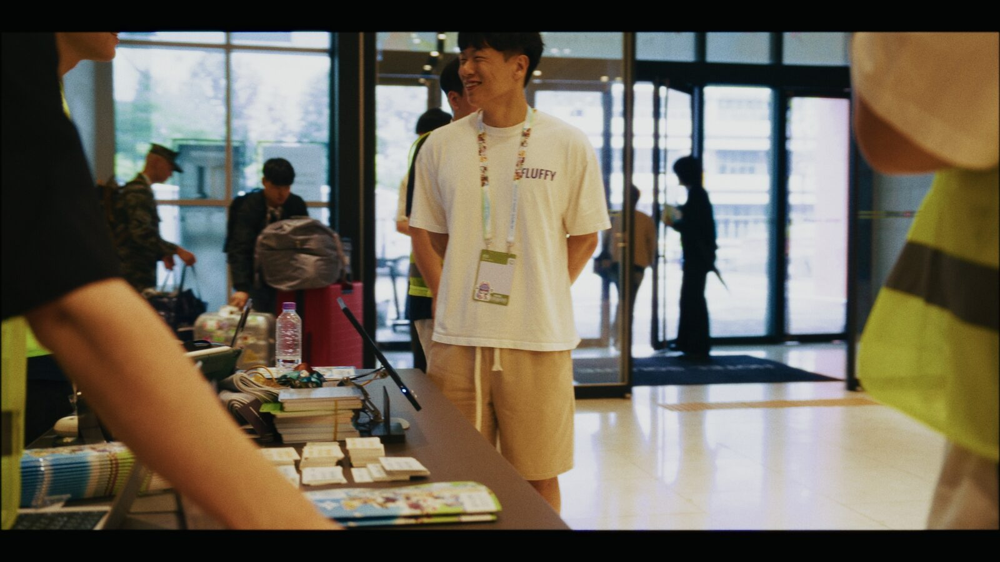
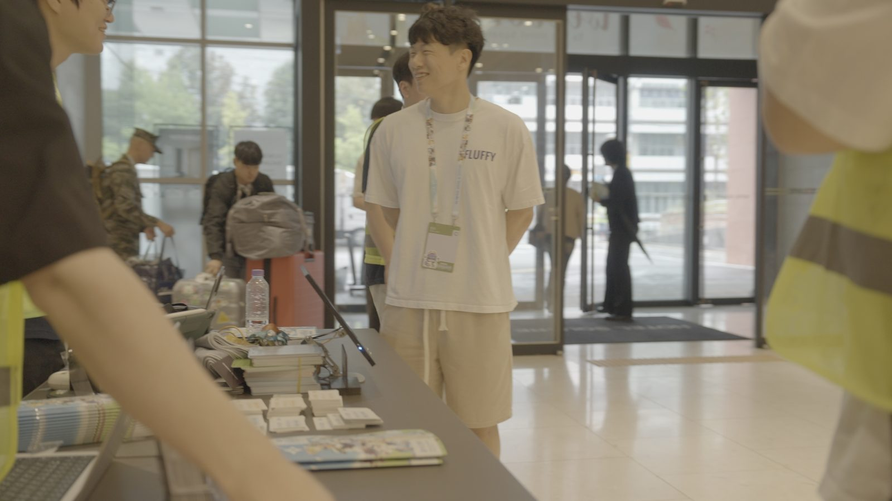
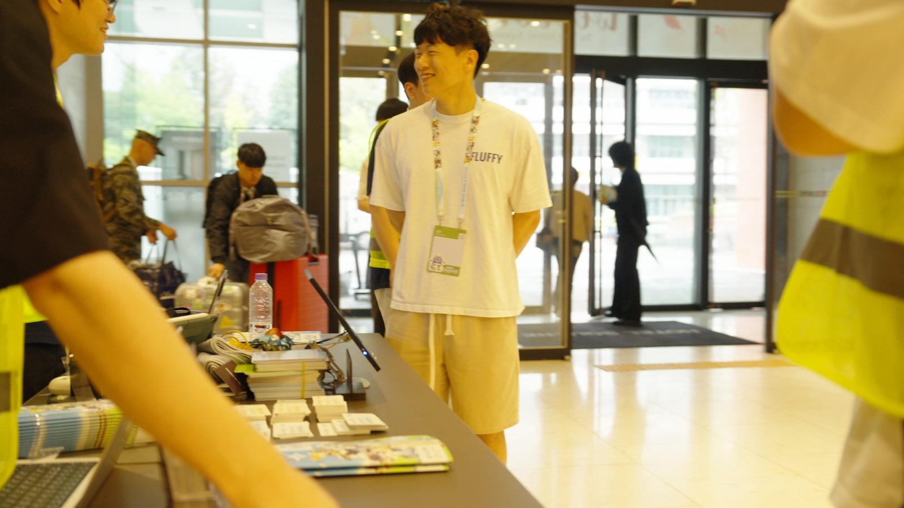
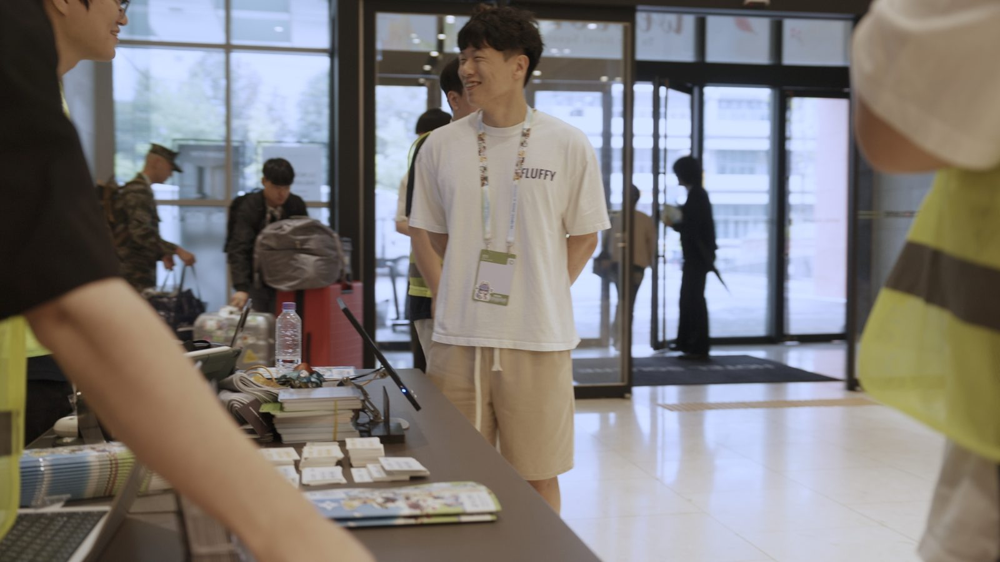
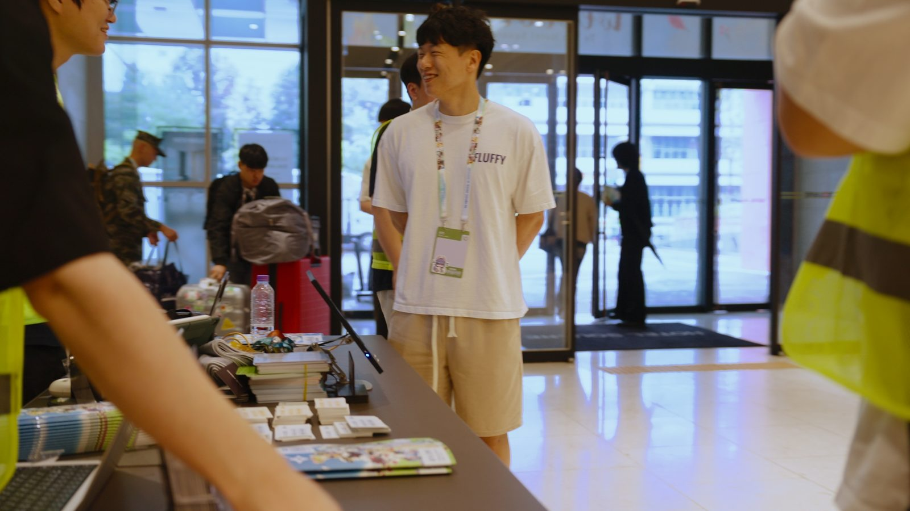
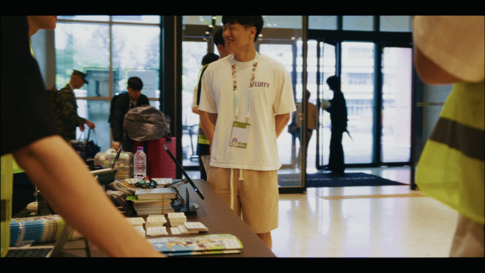

4:08
4:08FUR:RAID 2026 공식 리캡
촬영·편집·컬러·모션(총괄)
사흘간의 컨벤션을 4분으로 담았습니다. 금·토·일 당일 리캡 3편도 현장에서 완성해 그날 바로 올렸습니다.
촬영 · 컬러 그레이딩 · 조명
조회수는 2026.11.06 YouTube 기준입니다.
대표작
총괄과 조명감독을 맡은 작업, 가장 많이 본 작업을 분야가 겹치지 않게 골랐습니다.
4:08 15:34
15:34 3:38
3:38LUT·룩 설계 · 편집 보조
출연 8팀, 약 20곡의 라이브 클립 LUT와 룩을 원격으로 설계했습니다. 시리즈에서 가장 많이 본 영상입니다.
 2:40
2:40작업물
최신순입니다. 역할을 골라 보실 수 있습니다.
4:08촬영·편집·컬러·모션(총괄)
사흘간의 컨벤션을 4분으로 담았습니다. 금·토·일 당일 리캡 3편도 현장에서 완성해 그날 바로 올렸습니다.
3:38LUT·룩 설계 · 편집 보조
출연 8팀, 약 20곡의 라이브 클립 LUT와 룩을 원격으로 설계했습니다. 시리즈에서 가장 많이 본 영상입니다.
2:40촬영·편집·컬러(총괄)
캐릭터의 공식 설정색을 기준으로 컬러를 맞췄습니다. 팬들은 그 색을 기억하고 있으니까요.
 4:08
4:08촬영·편집·DI
행사 오리지널송의 스페셜 커버. 촬영부터 편집, DI까지 맡았습니다.
 4:55
4:55LUT·룩 설계 · 편집 보조
같은 시리즈의 라이브 클립. 공연 조명이 바뀌는 속에서도 아티스트의 톤을 일정하게 유지했습니다.
 2:25
2:25촬영(총괄)
참가자들이 함께 춘 단체 댄스의 공식 영상입니다.
 6:29
6:29조연출·편집·컬러
조명을 제어할 수 없는 라이브 현장. 후반에서 조명 편차를 정리했습니다.
 2:30
2:30촬영·편집·컬러·모션(총괄)
사흘간의 현장을 2분 30초로. 미디어팀을 꾸려 티저부터 엔딩크레딧까지 맡았습니다.
15:34조명감독
15분에 가까운 인터뷰 내내 표정과 피부 톤이 흔들리지 않도록 빛을 설계했습니다.
 4:16
4:16조명부
첫 상업 작업. LED 백그라운드 앞에서 반사와 잡광을 정리하며 장면마다 빛을 바꿨습니다.
 4:22
4:22촬영
수천 명이 모인 야외 축제. 해질녘부터 무대 조명까지 바뀌는 색온도를 촬영 중에 계속 맞췄습니다.
 1:06
1:06촬영
행사 3주 전에 공개한 66초 사전 티저. 사람들을 축제로 부르는 것이 목적이었습니다.
 2:20
2:20촬영·편집·컬러·모션(단독)
혼자 찍고 편집하고 색까지 잡은 첫 행사 리캡. 이 한 편으로 이듬해 미디어팀을 맡게 됐습니다.
 3:25
3:25촬영
혜화에서 청계천까지 이어진 행진을 따라가며 기록했습니다. 카메라 한 대가 부서졌지만 서브캠으로 끝까지 담았습니다.
 1:45
1:45조명부
계속 움직이는 안무를 위해 촬영 전에 동선을 읽고 빛의 방향을 미리 정해 두었습니다.
보정
캐릭터의 설정색이든 사람의 얼굴색이든, 촬영 순간 눌리고 틀어진 색을 한 컷씩 원래대로 되찾습니다.

 보정 전보정 후
보정 전보정 후
형광등과 무대 LED, 자연광이 한 화면에 섞이면 가장 먼저 무너지는 건 사람의 얼굴입니다.

 보정 전보정 후
보정 전보정 후

 보정 전보정 후
보정 전보정 후

 보정 전보정 후
보정 전보정 후

보정 전보정 후보정 과정
실내 행사 현장의 한 컷이 원본에서 납품본이 되기까지의 순서입니다.





왜 공방인가
AI가 영상을 만들고 숏폼이 하루에 수천 개씩 쏟아지는 시대입니다. 그럴수록 사람이 직접 보고 고른 장면, 손으로 맞춘 색이 차이를 만든다고 믿습니다.
공방이라는 이름은 그 약속입니다. 행사를 기록하는 일도 영화를 찍는 마음으로 대하고 마음에 들 때까지 한 컷을 다시 봅니다.
주황색 영상공방 · 황태건
의뢰 안내
무엇을 보내면 되는지, 그다음 어떻게 진행되는지 의뢰 안내 페이지에 정리해 두었습니다.